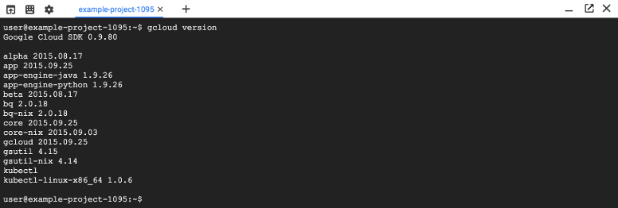
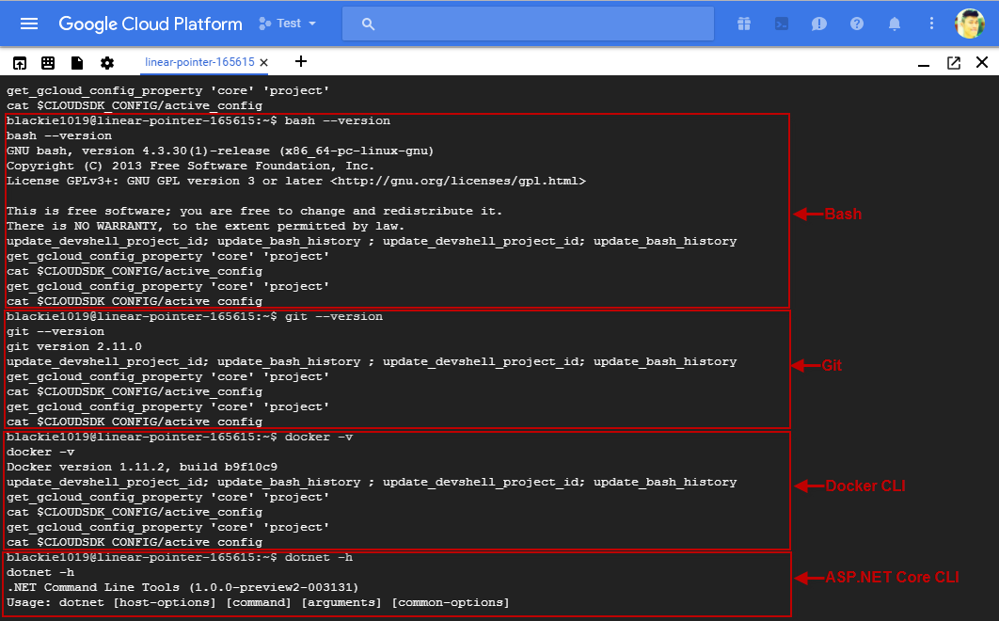
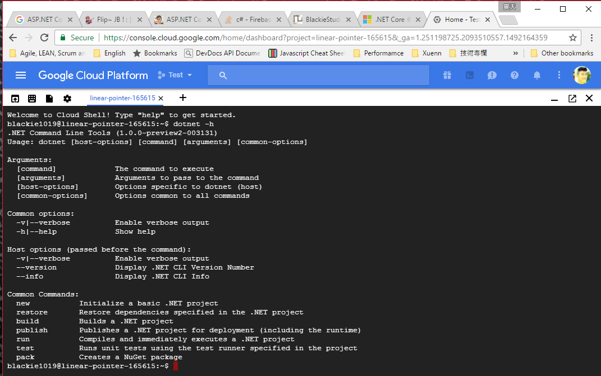
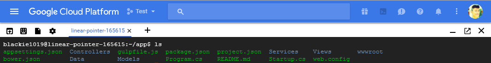
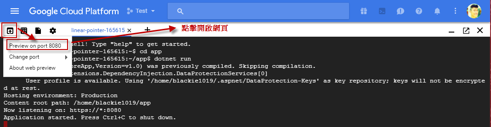
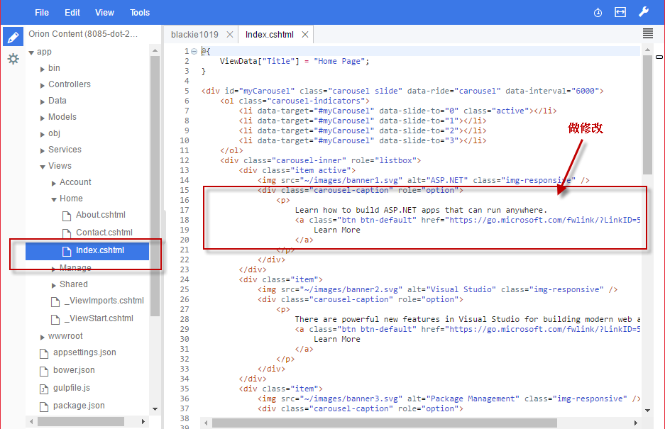
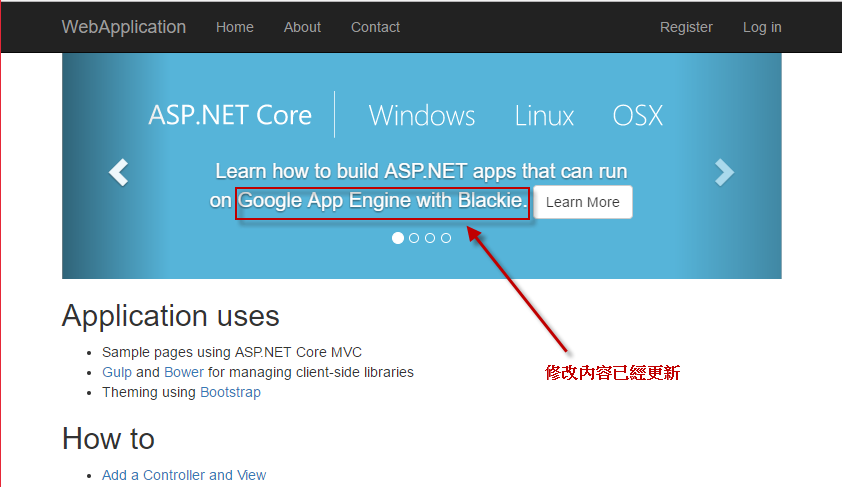

先前為大家介紹了Google Cloud Platform，這次將介紹如何實際將ASP.NET Core MVC專案放置在Google App Engine(GAE)的Standard環境運行。
先前分享過一篇Google Cloud Platform Introduction為大家介紹了整個GCP家族的架構與建立一個基本的 Google Compute Engine 並在上面透過 Virtual Machine(VM)的方式運行的Windows Server + IIS + ASP.NET Framework的網頁應用程式。
不同於前一篇我們使用VM的方式將應用程式環境整個架設起來，我們這次將透過 Google Cloud Shell 與 Google App Engine(GAE) 架設一個輕量環境的 ASP.NET Core 網頁應用程式。
Google App Engine
GCP的服務基本上從需要較多環境/設備管理控制的IaaS到平台服務開通就可以使用的PaaS都有提供對應的服務:

這邊我們先簡單看一下IaaS, PaaS甚至SaaS的差別:
IaaS: Infrastructure as a Service - 基礎設施即服務
提供基礎架構的雲端服務，包含硬體資源給客戶，包括：運算 技術、儲存、網路、…等等資源。用於安全的使用環境並給予合理的運算機性能、儲存機能、網路環境等基礎建設。
PaaS: Platform as a Service - 平台即服務
PaaS在網上提供各種開發和分發應用的解決方案，比如虛擬伺服器和作業系統。這節省了在硬體上的費用，也讓之間的合作變得更加容易。包括網頁應用管理，應用設計，應用虛擬主機，存儲，安全以及應用開發協作工具等。
SaaS：Software-as-a-Service - 軟體即服務
一種通過Internet提供軟體的模式，用戶不用再購買軟體，而改用向提供商租用基於Web的軟體，如G Suit
但本篇討論只會談到GCP上的PaaS的Google App Engine(GAE)。
Google在2008年推出GAE，讓開發者可以在遵循一定的開發原則/規則後，可以透過App Engine的工具來部署到GCP上，讓開發者可以不用受到開發以外其他雜事的煩惱(如部署、監控、維運等等的)。
目前 GAE 服務面向已經可以整合開發者整個完整的開發生命流程，包含開發、測試、部署，甚至協市場的AB測試、版本更新的發佈等動作，都可以完整的在GAE上運作。
GAE本身可以分為兩個, Standard Environment 與 Flexible Environment:
Standard Environment
Standard Environment是延續GAE一開始推出的語言與功能持續加強各項功能的PaaS服務，目前支援Java 7, Python 2.7, PHP 5.5, Go 1.6 等四種程式語言與版本，透過Google建置好的平台可以快速的達到自動的橫向擴展，並提供即時的監控資料。
另外，Standard Environment提供每天28個instance hour(s)的免費額度，還有其他的的免費額度優惠，讓開發者可以在免費的範圍內開發與測試自己的應用程式，其他詳情請參考https://cloud.google.com/appengine/quotas
Flexible Environment
Flexible Environment主要是想要提供有別於標準環境(Standard Environment)的限制，但是又具備大部份標準環境的自動化功能，透過Flexible Environment還可以進一步的區分成Standard Runtime以及Custom Runtime彈性的配置我們的環境。
這邊無論是哪一個Runtime，都是以Container的方式來運行，並將環境封裝後可以透過GCP來運行.
簡單來講Standard提供了一個封裝好的環境，提供相對便宜的價格，而Flexible則提供了我們自己可以克制的環境，但價格上面會稍微貴一點。
這邊價格都以US來做比較可以參考下圖:
- Standard environment instances:
| Instance class | Cost per hour per instance |
|---|---|
| B1 | $0.05 |
| B2 | $0.10 |
| B4 | $0.20 |
| B4_1G | $0.30 |
| B8 | $0.40 |
| F1 | $0.05 |
| F2 | $0.10 |
| F4 | $0.20 |
| F4_1G | $0.30 |
- Flexible environment instances:
| Resource | Unit | Unit cost |
|---|---|---|
| vCPU | per core hour | $0.0526 |
| Memory | per GB hour | $0.0071 |
| Persistent disk | per GB per month | $0.0400 |
這邊可以看到Standard的計算就很簡單了，單看你在什麼規模執行多久，但Flexible就需要針對使用的資源做計算了。
詳細的計算可以參考Google Cloud Platform Pricing Calculator。
Flexible Environment with ASP.NET Core and Google Runtime
Google Cloud Shell
Google Cloud Shell是一個協助開發者在任何瀏覽器中使用命令行管理基礎設施和應用的免費工具。有了Google Cloud Shell我們就不用擔心當我們起一個App Engine時需要先安裝什麼工具才可以將我們的程式部屬上去，因為他支援了我們常見的命令列工具。
除了Google Cloud SDK已經幫我們載入:

其他我們會用到的也幫忙我們準備好了:

以下是他的特色:
- 是一個暫時的Compute Engine virtual machine instance
- 支援網頁瀏覽器直接開啟使用
- Cloud Shell保留5G的空間來讓我們放資料在Home資料夾內
- 預先裝載了Google Cloud SDK 與其他tools
- 預先裝載了多種語言的SDK，包含Java, Go, Python, Node.js, PHP, Ruby與ASP.NET Core(Beta)
- 提供Web Perview功能可直接連接至該Instance當前對外的IP
- 內建 authorization 去整合 Cloud Platform Console 專案(projects) and 資源(resources)
其他細節可以參考官方文件Google Cloud Shell，而當前開發工具與語言支援可以參考Available tools與Language support。以下節錄目前當前的內容:
Tools
目前預載的工具:
| Type | Tool |
|---|---|
| Linux shell interpreters | bash, sh |
| Linux utilities | Standard Debian system utilities |
| Google SDKs and tools | Google App Engine SDK, Google Cloud SDK including the gcloud command-line tool, gsutil for Cloud Storage |
| Text editors | Emacs, Vim, Nano |
| Build and package tools | Gradle, Make, Maven, npm, nvm, pip |
| Source control tools | Git, Mercurial |
| Additional tools | Dockerm, iPython, MySQL client, gRPC compiler |
SDKs
是目前支援的SDK:
| Language | Version |
|---|---|
| Java | JRE/JDK 1.7 and 1.8 |
| Go | 1.5 |
| Python | 2.7 |
| Node.js | v0.12.2, v4.7.0 and v6.9.2 (use nvm to switch versions) |
| Ruby | 2.2.3 |
| PHP | 5.6.14 |
| .NET | 1.0.0-preview2 |
ASP.NET Core
ASP.NET Core 是一個新的跨平台的開源專案可以讓我們用C#建置各種應用程式，包含網頁應用, API服務與執行在不同平台的一般應用程式等。
.NET Core Command Line Interface(CLI)
.NET Core CLI 是新的跨平台工具，協助我們開發與建置ASP.NET Core的應用程式，透過該工具我們就可以輕鬆地建立專案,還原專案套件,執行測試案例與發佈專案。
這邊我們將在Google Cloud Shell 上面透過 dotnet 這樣的指令幫我們呼叫相關功能，建置一個MVC網站。對於 dotnet 想了解更多可以在輸入dotnet -h來查看:

細節可以參考官方社群介紹.NET Core 命令列介面 (CLI) 工具。
Create First App in App Engine Standard Environment
這邊我們快速地開啟Google Cloud Shell後可以輸入以下指令建置一個ASP.NET Core MVC專案:
mkdir app ; cd app
dotnet new -t web
這邊將專案建置後我們可以透過nuget將我們ASP.NET Core的所有相依套件重新載入至目前目錄中:
dotnet restore
當還原完成後我們即可啟動該程式
dotnet run透過Google Shell的左上角的Web Preview功能立刻連結至該頁面看我們建置的MVC網站


最後呈現的頁面與網址如下:

這邊我們可以透過Google Cloud Shell預設的編輯器(editor)來調整檔案內容:

接著我們可以嘗試修改下面的內容

由於ASP.NET Core MVC的頁面修改不用重新編譯，所以我們直接刷新頁面就可以看到以下修改:

接著我們只要透過下面的指令發行 Release 版本的 .dll
dotnet publish --configuration Release接著我們到剛剛 Release 版本的資料夾中新增並編輯 app.yaml 檔案
cd bin/Release/netcoreapp1.0/publish/
vi app.yaml這邊我們使用 Google 自己的 aspnetcore Runtime:
runtime: aspnetcore
env: flex因為目前 aspnetcore 這個 Runtime 還處於 beta 階段，所以需要透過 ** beta ** 這個套件來幫我們識別相關指令與設定
gcloud beta app deploy成功後輸入下面指令即可看到網頁
gcloud app browse[補充說明] GAE - Flexible Environment Support ASP.NET Core 1.0.4 Only
這邊要特別說明一下GCP上的App Engine目前 beta 中的 aspnetcore Runtime 僅支援 1.0.4而這個版本的對應是.NET Core 1.0.0 與 .NET Core 1.0.0 SDK - Preview 2，是在2016年的9月推出的，有賴於社群的積極貢獻與回饋，在短短的7個月官方就推出了新版的.NET Core 1.1.1包含了.NET Core 1.1.1 與 .NET Core 1.0.1 SDK．
很遺憾的目前還沒找到可以幫App Engine升級的方法，而支援.NET Core這部分也由於還在Beta所以已經請求官方upgrade到1.1之後的版本．如果想用新版開發的話可以嘗試 GAE的 - Flexible Environment with Custom Runtime，這部分也會在之後的文章為大家介紹與分享。